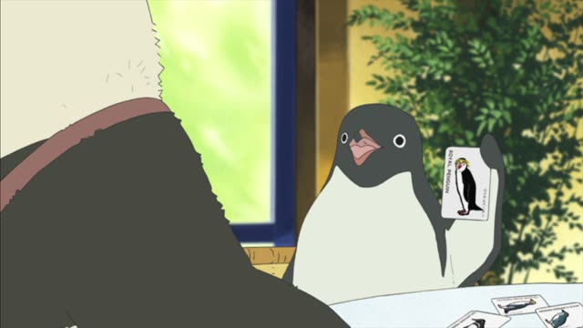
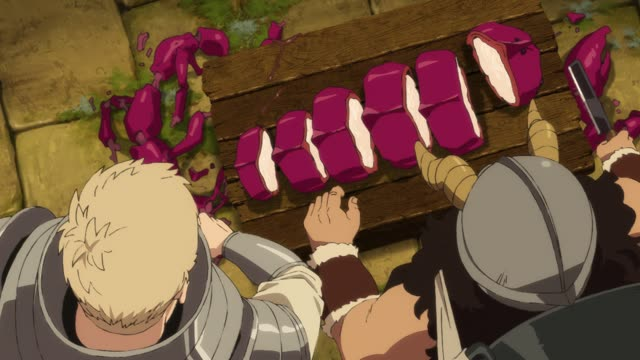
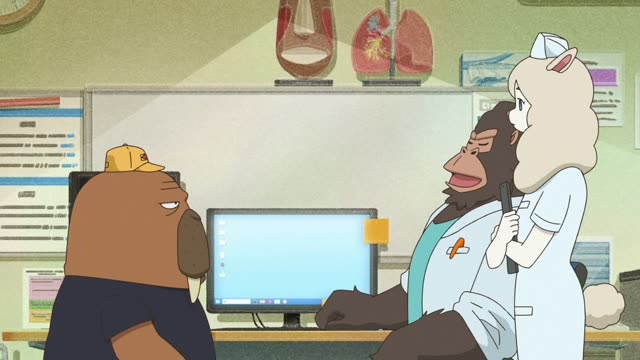
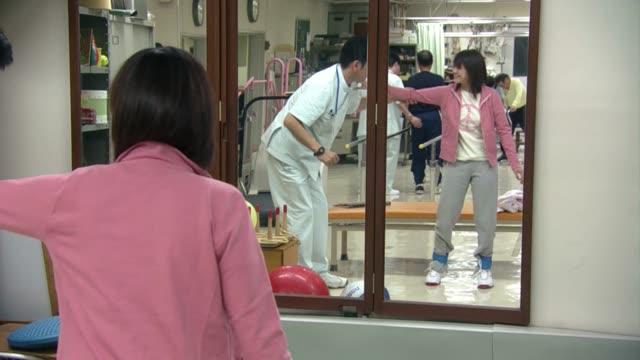
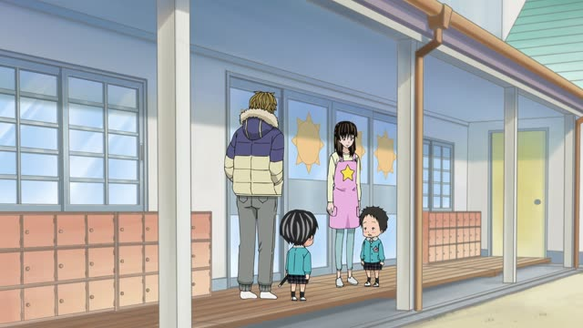

～やすい
| Polite | ～やすいです |
|---|---|
| Casual | ～やすい ます-stem + やすい |
Same meaning: "easy to do". Only the politeness changes. It works like an い-adjective: やすくない, やすかった.

Shirokuma Cafe · Episode 22
ロイヤルペンギンは顔が白いから、わかりやすいですよ。
"Royal penguins have white faces, so they're easy to tell apart."
Verb ます-stem + やすい means "easy to do": 分かります → 分かりやすい (easy to understand). The result works like an い-adjective.
On this card, Penguin explains the penguin species. わかりやすい: easy to recognize. ですよ makes it polite.
It can also mean "tends to": 壊れやすい (breaks easily), 風邪を引きやすい (catches colds easily).

Dungeon Meshi · Episode 1
食べやすいしな。
"And it's easier to eat."
On this card, Senshi cuts slits in a monster for the hot pot. 食べやすい: easy to eat.
Quick Examples
A new pen.
このペン、書きやすい！
"This pen is easy to write with!"
CasualA teacher's explanation.
先生の説明は分かりやすいです。
"The teacher's explanations are easy to understand."
PoliteChoosing shoes.
もっと歩きやすい靴がいい。
"I want shoes that are easier to walk in."
Before a noun, like any い-adjective.
CasualAbout a glass.
このグラスは割れやすいですから、気をつけてください。
"This glass breaks easily, so please be careful."
"Tends to": 割れやすい.
PoliteWith and without
この本を読む。
"I read this book."
この本は読みやすい。
"This book is easy to read."
Examples from Media
Brush Up Life · Episode 6
分かりやすいですけど…
"It's easy to understand, but..."
About a rather too-real food photo.
Slam Dunk · Episode 25
でけえな、こりゃ。ボールが入れやすいや。
"Wow, it's huge. Easy to get the ball in."

Odd Taxi · Episode 1
聞きやすいんだよな。
"He's easy to listen to."
About a rakugo storyteller.
Shirokuma Cafe · Episode 38
掃除機って壊れやすいんだね。
"Vacuum cleaners break easily, huh."
"Tends to" meaning.

1 Litre of Tears · Episode 7
歩きやすい！
"It's easy to walk in!"
Aya tries new shoes.
Brush Up Life · Episode 9
特に、あーちんは風邪もひきやすいし
"Especially since Achin catches colds easily"
Good Morning Call · Episode 7
本当、菜緒は分かりやすいな。
"Nao, you're so easy to read."
Easy to understand = obvious.

Kotaro Lives Alone · Episode 7
風邪を引きやすいんだって。
"They say I catch colds easily."